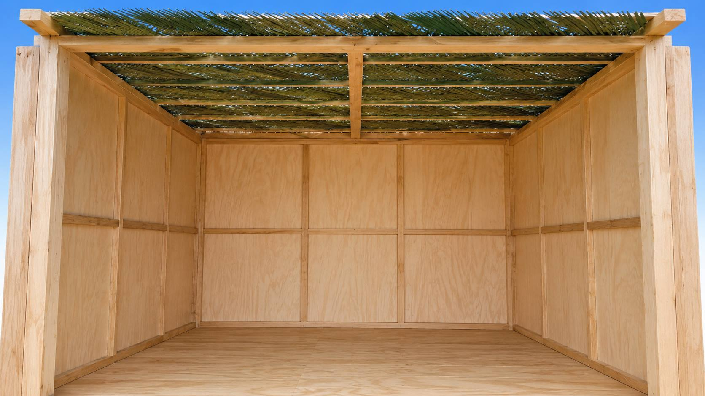
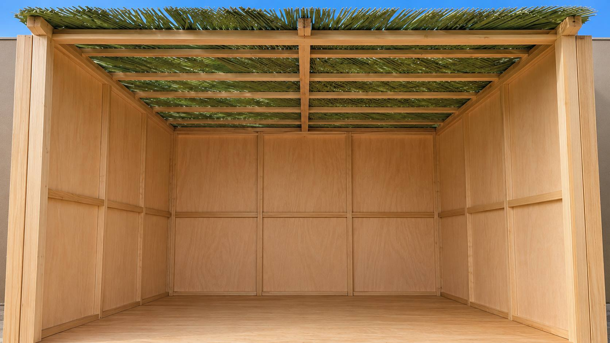
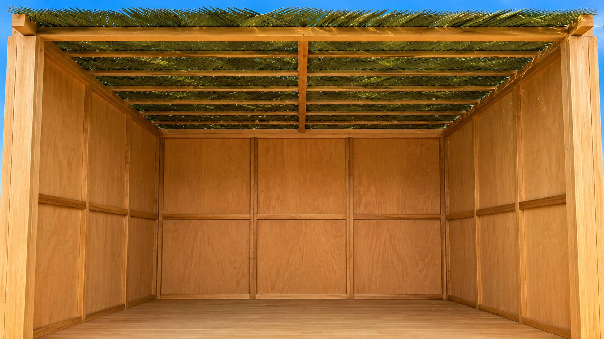
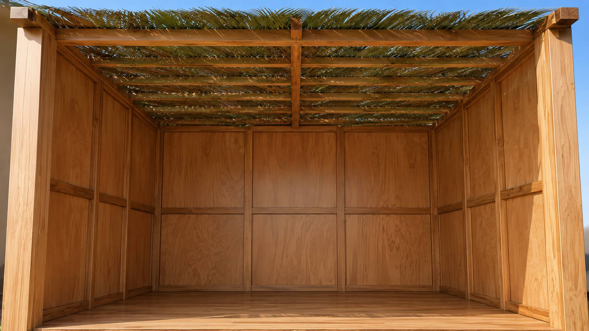
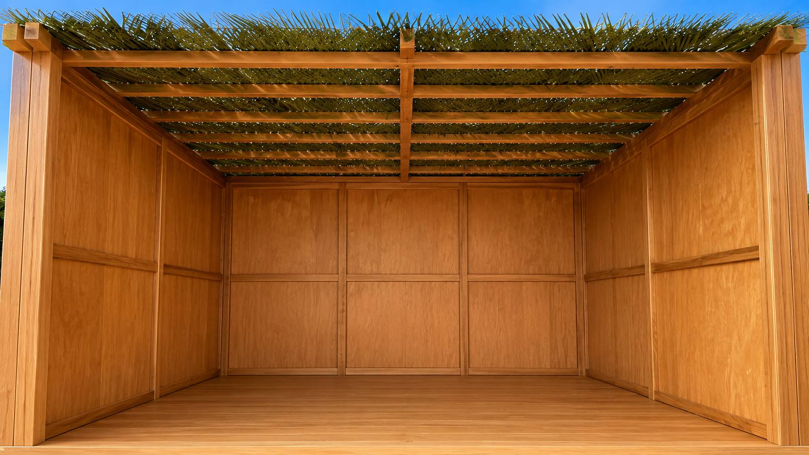
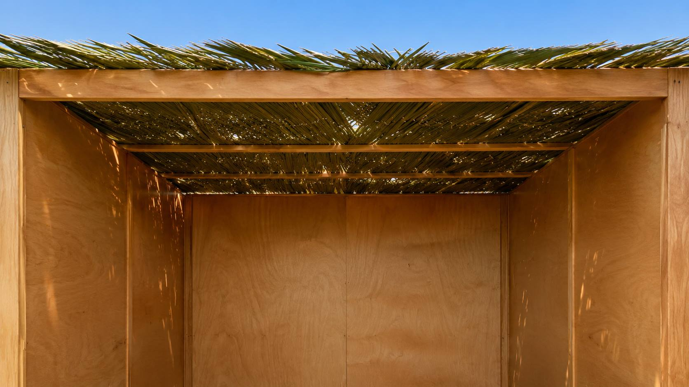

Basic setup
Compact Sukkah Layout
Good for showing smaller spaces, simple framing, and clean setup work.
Gallery
Browse examples of layouts, sizes, and outdoor work. This page is set up to grow as more real project photos are added.

Good for showing smaller spaces, simple framing, and clean setup work.

Use this spot for a real family-size sukkah with finished walls and schach.

A place for a larger build, nicer finishing, or a project with special constraints.

Use this card for unusual sizes, custom framing, or work around tight spaces.

A standard card for before-and-after photos or seasonal setup examples.

This card can become the best current project photo once real images are ready.